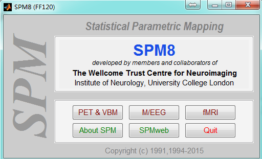
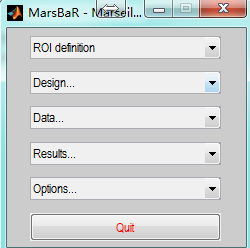
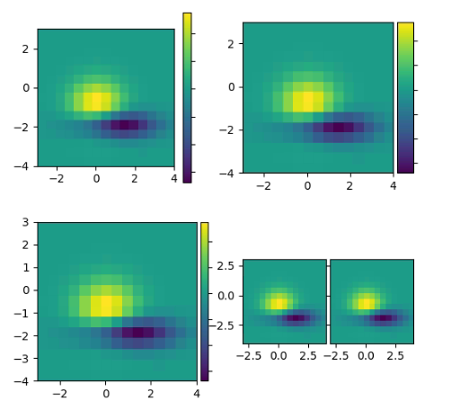
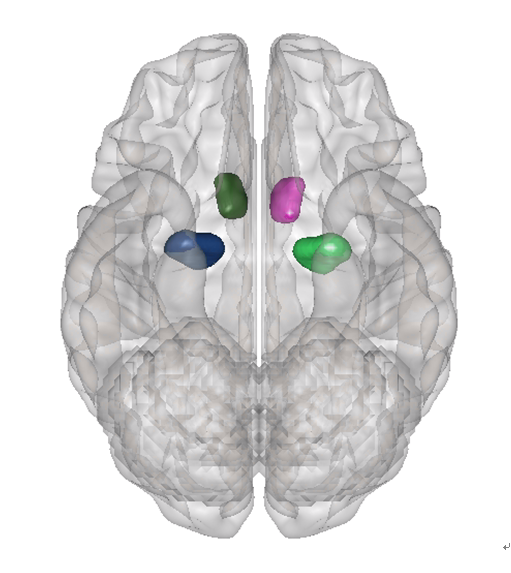
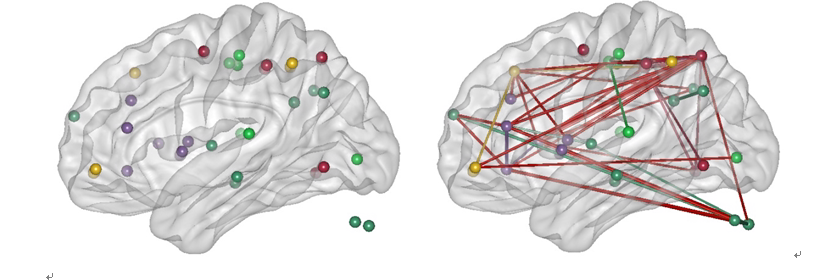
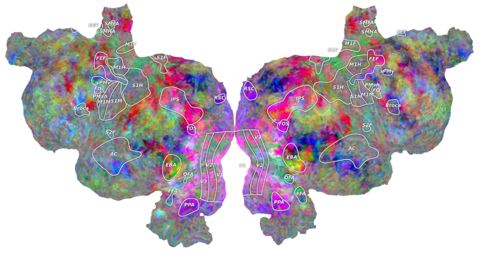
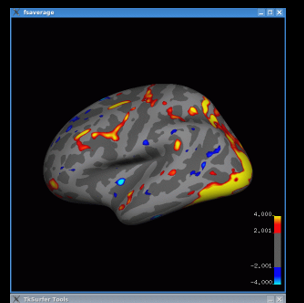
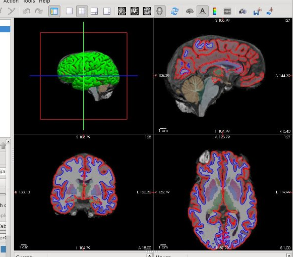

实验设计
psychopy
PsychoPy is an open-source application allowing you run a wide range of neuroscience, psychology and psychophysics experiments. It’s a free, powerful alternative to Presentation™ or e-Prime™, written in Python (a free alternative to Matlab™ ).
PsychoPy is unique in giving you a choice of interface: use the Builder interface to build rich, flexible experiments easily or use the Coder interface to write extremely powerful experiments in the widely-used Python programming language. The best of both worlds!
一个用于刺激呈现的工具包，可以保住设计实验，处理图像和声音的呈现方式，有基于matlab的版本。
数据预处理和统计分析
SPM

基于matlab的工具包，可以完成fMRI原始数据格式的转换，时间层校正，头动校正，配准，分割，平滑等预处理操作。可以进行个体水平和组水平的统计分析。可以做DCM。除此之外，还能提供一些图像之间运算的小工具，例如图像之间的加减乘除。
AFNI
AFNI (Analysis of Functional NeuroImages) is a set of C programs for processing, analyzing, and displaying functional MRI (FMRI) data - a technique for mapping human brain activity. It runs on Unix+X11+Motif systems, including SGI, Solaris, Linux, and Mac OS X. It is available free (in C source code format, and some precompiled binaries) for research purposes.
FSL
FSL is a comprehensive library of analysis tools for FMRI, MRI and DTI brain imaging data. It runs on Apple and PCs (both Linux, and Windows via a Virtual Machine), and is very easy to install. Most of the tools can be run both from the command line and as GUIs (“point-and-click” graphical user interfaces)
NeuroDebian
一个集成了大部分神经科学领域Linux系统下的工具的虚拟机镜像。里面包含的软件的列表可以参考：http://neuro.debian.net/pkgs.html
DPABI
a toolbox for Data Processing & Analysis for Brain Imaging. 静息态脑网络的相关数据和工具：http://rfmri.org/。
NiBabel
提供读写神经影像数据格式的接口，基于python.
###
ROI和Mask制作和查看
freeroi
FreeROI is a versatile image processing software developed for neuroimaging data. Its goal is to provide a user-friendly interface for neuroimaging researchers to visualize and analyze their data, especially in defining region of interest (ROI) for ROI analysis.
xjview
一个基于Matlab和SPM的用于查看激活的工具，可以Load不同的大脑地图从而实现显示激活的脑区的名称。还可以根据激活保存成Mask.
WFU_PickAtlas
基于Matlab和SPM的ROI制作工具。支持导入不同的大脑地图制作各个脑区的Mask。也支持以某个MNI坐标为中心，制作球形，方形的mask.
功能连接
CONN
一个用来做静息态和任务态功能核磁成像数据的功能连接(functional connectivity)的工具包，包括去噪，first_level,second_level分析，支持region-to-region, seed-to-region, voxel-to-voxel等水平的功能连接分析，结果的展示也很漂亮。
REST
主要功能是用来做静息态数据的功能连接，也提供了图像计算的一些方法，可以用来计算图像乘以激活之后的Mask。还提供了可视化图像的界面，可以用来查看图像。
C-PAC
The Configurable Pipeline for the Analysis of Connectomes (C-PAC) is a configurable, open-source, Nipype-based, automated processing pipeline for resting state functional MRI (R-fMRI) data, for use by both novice and expert users
wiki上处理功能连接的工具包的列表
<https://en.wikipedia.org/wiki/List_of_functional_connectivity_software
MVPA
MVPA
The MVPA Toolbox is a set of Matlab tools to facilitate multi-voxel pattern analysis of fMRI neuroimaging data.
The aim is to create a set of open source functions in a widely-used language to facilitate exploration of multi-voxel pattern analysis techniques and to reduce the ‘startup costs’ for knowledgeable users eager to apply pattern classification algorithms to their imaging data. By developing the toolbox in the Matlab environment, users are able to take advantage of the vast array of existing functions. The data structures used and generated by the toolbox are designed to facilitate exploration and further script development.
pyMVPA
PyMVPA is a Python package intended to ease statistical learning analyses of large datasets. It offers an extensible framework with a high-level interface to a broad range of algorithms for classification, regression, feature selection, data import and export. It is designed to integrate well with related software packages, such as scikit-learn, shogun, MDP, etc. While it is not limited to the neuroimaging domain, it is eminently suited for such datasets. PyMVPA is free software and requires nothing but free-software to run.
pyMVPA windows 安装包的地址：http://www.lfd.uci.edu/~gohlke/pythonlibs/
CoSMoMVPA
A multi-modal, multi-variate pattern analysis (MVPA) toolbox in Matlab / GNU Octave for cognitive neuroscientists.
SignalChange
marsbar

marsbar是基于Matlab的一个计算SignalChange的工具。里面定义了一种.mat的ROI格式，可以和.nii的ROI格式之间进行转换。里面提供了将一个多标签Mask分割成多个单独的mask的方法，当然，反过来也可以实现。
group ICA 分析
[gift](http://mialab.mrn.org/software/gift/
)
一个使用很广泛的用来做组水平的ICA的工具。
DCM
TAPAS
大量平行DCM的计算。
绘图
Origin
Origin是由OriginLab公司开发的一个科学绘图、数据分析软件，支持在Microsoft Windows下运行。Origin支持各种各样的2D/3D图形。Origin中的数据分析功能包括统计，信号处理，曲线拟合以及峰值分析。Origin中的曲线拟合是采用基于Levernberg-Marquardt算法（LMA）的非线性最小二乘法拟合。Origin强大的数据导入功能，支持多种格式的数据，包括ASCII , Excel, NI TDM, DIADem, NetCDF, SPC，等等。图形输出格式多样，例如JPEG，GIF，EPS，TIFF等。内置的查询工具可通过ADO访问数据库数据。
EXCEL
各种条形图，柱状图，扇形图都可以用EXCEL来画。
Matlab
Matlab可以绘制各种2D，3D图形。很多基于Matlab的工具包画出的图形都是基于Matlab的画图功能。但是想用Matlab画出好看的图需要直接编写代码。
Matplotlib
Matplotlib is a Python 2D plotting library which produces publication quality figures in a variety of hardcopy formats and interactive environments across platforms. Matplotlib can be used in Python scripts, the Python and IPython shell, the jupyter notebook, web application servers, and four graphical user interface toolkits.

以上几个都是通用的绘图工具，适用于绘制各种图形。在认知神经科学的绘图中，经常需要以大脑为背景绘制图像。下面介绍几个实现了在大脑皮层或者大脑的展开层绘制图像的工具。
BRAT
Brainnetome fMRI toolkit (brat) refers to the construction and assessment of brain network used to evaluated brain network architecture about fMRI imaging data. These ideas have been instantiated in software that is called Brainnetome fRMI toolkit(brat).
The brat package has been designed for the analysis of brain network based on spm (http://www.fil.ion.ucl.ac.uk/spm/). The images can from different cohorts, or time-series from the same subject. The current release is designed for the analysis of fMRI, EEG.
It includes the proprecessing steps, functional connectivity analysis, network analysis and network view etc.
使用它可以很方便的绘制出类似下面这样的图：


BrainNet Viewer
BrainNet Viewer is a brain network visualization tool, which can help researchers to visualize structural and functional connectivity patterns from different levels in a quick, easy, and flexible way.
一个类似上面的那样可以绘制脑区位置和大脑功能连接的工具，比上面的工具好用，选项多一些，配置更方便。
pycortex
一个基于python的绘制大脑展开皮层的工具。绘制的图形类似下面这样：

FreeSurfer
一个绘制皮层图像的工具，包含一些分析的方法。是由麻省总医院（Massachusetts General Hospital）的Bruce Fischl和同事开发的处理MRI解剖图像的软件包。虽然它实际上不是fMRI分析工具，但是因为它可以很容易地自动生成皮层表面模型和解剖分割图，因此近几年也越来越流行。这些模型可以用来进行基于皮层表面的被试间配准，这通常比常规的被试间的三维大脑配准更精确(见第4章)。它也可以导入FSL或者SPM处理过的统计结果，将它们投射在重建的皮层表面，这样可以进行基于皮层表面的组分析.产生的图像类似下面这样：




caret
类似freesurfer，可以绘制类似下面的图形，可以看到，这个更好看一些。

circos
一个常用来可视化基因组的工具包，可以用来画各种环状图形。

BrainBrowser
一个大脑的浏览器，各种视角看大脑。
cbrain
一个基于浏览器的脑影像分析工具集合。
pysurfer
PySurfer is a Python library for visualizing cortical surface representations of neuroimaging data. The package is primarily intended for use with Freesurfer, but it can plot data that are drawn from a variety of sources. PySurfer extends Mayavi’s powerful rendering engine with a high-level interface for working with MRI and MEG data.